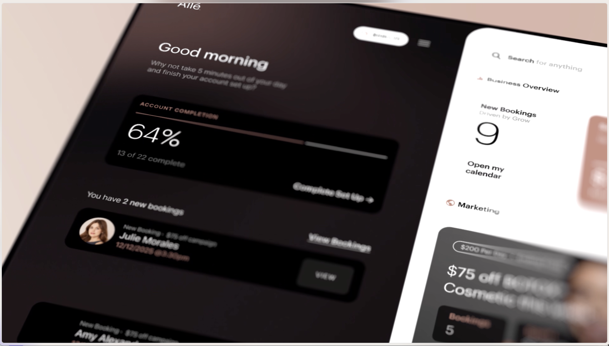
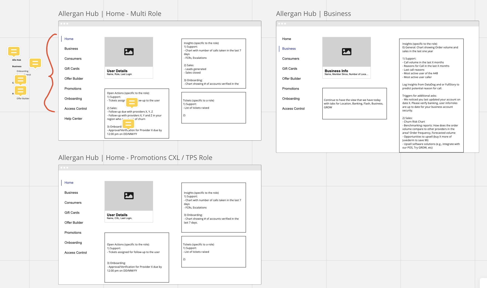
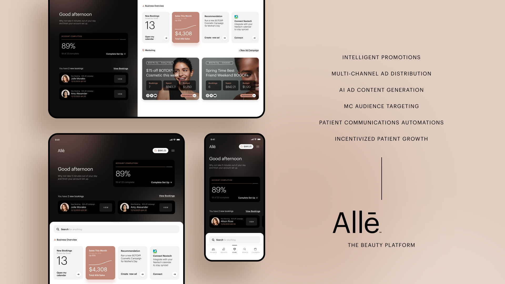

Allē Grow: Product Design Vision
How I led UX strategy and prototype ideation for the early vision of Allē for Business, and gave executives, internal teams, and B2B partners something concrete to believe in.

The short version
In eight two-week sprints, I owned the UX strategy and prototype ideation for Allē Grow, the early name for the Allē for Business initiative. Senior executives gave the platform the green light.
The speculative prototype we built did two jobs. Inside Allergan, it was shared across teams as a north star vision. Outside, previews of its promotional materials showed B2B partners the value Allē could bring to their businesses.
- 8two-week sprints, about 16 weeks
- Green lightfrom senior executives for Allē for Business
- North starvision shared across Allergan teams
The challenge was a familiar one. We had research, a live product, and a big ambition. What we didn't have yet was a shared picture of the experience Grow should become. My job was to help build it.
Problem
What we were solving
Allergan Aesthetics set out to improve its rewards program with Bttr. As the UX and product design consulting partner, our team helped stand up the Allē rewards program, including Alle.com, the Allē app, and the strategy for what came next. Grow was that next step. It was the early name for the Allē for Business initiative.
A new business initiative comes with a lot of open questions. We needed to understand the customer journey for Grow from three angles at once: what past research had already told us, what the product looked like today, and what it could become.
Underneath all of it sat one question. What does each customer persona need, where do they struggle, and how does that shape Grow's path into Beta and General Release?

Outcome
What success looked like
We set out to discover the needs and challenges of each customer persona, using the Allē Insights Research Report that Bttr completed in May 2021 as our foundation. Then we would connect those needs to where Grow was headed.
I wanted the work to leave people with something they could react to, not a report they had to read. A vision to align on, and a prototype that made the possibilities easy to talk about with executives, product teams, and eventually business partners.
Scope
What was in, what was out
The work covered three connected pieces, delivered across eight sprints: a Grow vision, ideation, and a speculative prototype. I owned the UX strategy and the prototype ideation. The prototype was speculative by design. Its job was to explore and persuade, not to ship.
In scope
- UX strategy for Grow/Alle for Business
- Product design vision
- Ideation and concepts
- Speculative prototype vision
- Promotional materials for the prototype
- Internal promotional video
Out of scope
- Engineering Specs
- Design System Implementation
- Android App Development
- Dev/Production strategy
Stakeholders
Who we worked with
This was a partnership. Our wider Bttr consulting team of about 12 UX designers worked with Allergan Aesthetics' internal stakeholders and product teams to modernize and extend the Allē platform. On Grow, I worked day to day with a core team of seven or more.
- Senior executives, Allergan AestheticsThe decision makers who green-lit the Allē for Business platform.
- Internal stakeholders and product teamsThe teams who would carry the vision forward as a north star.
- B2B partnersThe audience for the prototype's promotional materials.
- Bttr teamOne product manager, one Chief Design Officer, four UX designers, one UI designer, and me as Sr. Product/UX Designer.
Timeline
8 sprints, about 16 weeks
The work ran in Q2 and Q3 of 2021, in two-week agile sprints. We moved from understanding to ideas to something people could see and touch.
- S1
- S2
- S3
- S4
- S5
- S6
- S7
- S8
- Vision[Sprints X–Y] Grounding the work in the May 2021 research, the current product, and the future of Grow.
- Ideation[Sprints X–Y] Exploring how each persona's needs could shape the experience.
- Speculative prototype[Sprints X–Y] Turning the strongest ideas into something people could react to.
Artifacts
What we made
Each artifact had a job. Some helped the team think, and others helped people outside the team believe.
Lessons Learned
What worked, and what I took from it
I looked at what we learned two ways: against the business goals, and against what success meant for the people on the project.
Business success
Senior executives green-lit the Allē for Business platform. The prototype became a north star vision that was shared around Allergan teams, and its promotional materials were previewed for B2B partners to highlight the value the platform could bring to their businesses. [Add any numbers, such as partner interest or adoption, if you have them.]
Stakeholder success
Executives had something concrete to decide on. Internal teams had a shared direction. Partners could see the value for themselves. [Add a stakeholder quote if you have one.]
What I took from it
Build on what you already know. The May 2021 research gave us a head start, so we spent our time on the future instead of re-learning the past.
A prototype changes the conversation. People react to something they can see far faster than something they have to imagine.
Design for more than one audience. The same work had to persuade executives, guide internal teams, and speak to partners. Each needed a different way in.
What I'd do differently. [Add one honest reflection.]
Where it landed

In 1.5 quarters, We helped turn research and a live product into a vision people could believe in.
As the owner of UX strategy and prototype ideation, I built the speculative prototype that gave senior executives the confidence to green-light Allē for Business. It then served as a north star for Allergan teams and a way to show B2B partners what the platform could do for them.
The lasting lesson is simple. Good research earns you the right to be ambitious, and a concrete prototype is how you get everyone else to share that ambition.
See it in action
I was involved with video storyboarding, writing VO, collaborating with the animation team, and providing feedback throughout the production process.
Watch a short internal promotional video for the Allē Grow / Allē for Business platform.